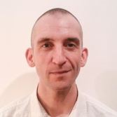

Sessions
Agenda
| Room 1 | Room 2 | |
|---|---|---|
| 8:00 - 9:00 | Registration | |
| 9:00 - 9:15 | Welcome Session | |
| 9:15 - 10:00 |
Chad Fowler

Ten years ago, I wrote the first edition of The Passionate Programmer: Creating a Remarkable Career in Software Development. At the time, it represented my best understanding of how a normal person could move from a typical career path to a remarkable one. You learn a lot in 10 years. Old patterns to out to have not been patterns after all. New patterns emerge. And the cliché fits: less is more. In this talk, I'll tell you what the > 40 year old me would advise the 30 year old who wrote that book. How does one create a remarkable career? What is the least I have to know and do? |
|
| 10:00 - 10:30 | Coffee break | |
| 10:30 - 11:15 |
Oliver Sturm

Writing cool and pretty code is easy — anyone can do that! Hm, or maybe not. But we‘re all great at laughing about really scary code, although it can be useful to spend some time thinking about it as well… in this talk we’ll look at anti-patterns and similar constructs that can scare a C# developer. There will be laughter, promise! |
Mathias Brandewinder

Test-Driven Development is about writing a test first, then the code that satisfies the test. Or... is it? Classic TDD has been crucial in my growth as a developer; and yet, as I started using F# more and C# less, my coding practices have evolved dramatically. Nowadays, I barely test first, but spend my days in the scripting environment. In this talk, I will examine how I write code in F# today, in a style I consider very much inspired by TDD; I will also discuss how exploring two paradigms (C# and F#) forced me to re-examine my beliefs, and evolve a slightly different (and perhaps less language specific) undertanding of some of the same core principles. |
| 11:15 - 11:40 | Coffee break | |
| 11:40 - 12:25 |
Scott Allen

Aurelia is a next generation JavaScript framework for building responsive, interactive applications in HTML. In this session we’ll see how to construct an application using the various features of Aurelia, including routing, dependency injection, custom elements, and data binding. Along the way, you might also learn about a few cutting edge JavaScript tools like the Babel transpiler, and the jspm package manager. |
Adam Ralph
The world of open source software has never been more exciting than it is right now. Communities spanning all platforms are thriving and more inclusive than ever, with like minded individuals and organisations, small and large, working together to produce great software for everyone. In particular, Microsoft are making huge strides into OSS with frameworks, runtimes, compilers and more being publicized on GitHub at unprecedented rate. In November last year I unexpectedly became the first community member to have a PR accepted for the .NET core framework. With my 15 minutes of fame now over, I'd like to reflect on the journey that took 'that Czechoslovakian guy' from a curious OSS onlooker to a passionate OSS addict and share my views on the future of OSS. We'll discover what OSS is, why it works and just how easy it is to get involved, perhaps even with a contribution or two. OSS is not just about coding and there are plenty of other ways to contribute, so even if you're not a coder, this talk is still for you. |
| 12:25 - 13:40 | Lunch | |
| 13:40 - 14:25 |
Shay Friedman

So you’re building the web, right? And you’re having fun, right? Inventing the wheel each and every time when you create this “float-right” class, right? Feeling the warmth of a thousand suns when you design yet another form, right? That’s not so fun anymore, eh? Feel sad no more! Twitter Bootstrap is a comprehensive CSS framework that makes all of the usual web design stuff much easier. It’s so good you might enjoy CSS once again! Come to the session to see what Twitter Bootstrap is, why it is so awesome, and how you create smooth looking web sites in a matter of minutes! |
Tomas Petricek
In the modern world, you have access to vast amounts of data about everything. International organizations like World Bank collect thousands of indicators about all countries of the world, Open Government Data initiatives publish data sources about environment, transport, society and much more. In this talk, you'll see how F# and type providers make it easy to access the data around you and build interesting visualizations that help you understand the world. We won't be limited just to public open data sources though - you can use the same ideas for working with any XML and CSV files or JSON-based REST services. However, we will go a bit further than that - what if every data analysis or news report that comes with a chart was actually a little script that you could re-run and modify to validate its correctness and dig a bit deeper if you were curious about the topic? |
| 14:25 - 14:50 | Coffee break | |
| 14:50 - 15:35 |
Tim Perry
Securely setting up a web stack today is a tricky balancing act, as you gingerly balance frameworks and services and tools all atop one another, ever higher, to get all mod cons happily running together safely and correctly. One security flaw though, and the whole pile tumbles down on you to throw your customer passwords to the world. In this talk we take a stroll down through a modern web stack and examine some recent major security breakages in each layer to see how they work and why. With any luck we can work out how to avoid this sort of thing in future too, when either using or building such tools, but if all else fails we can at least relax from all the careful balancing with a little schadenfreude. |
Rob Conery

NoSQL/Document databases have changed the way we build things - whether you like it or not. Even if you’re a diehard relational person - you’ve been touched by their impact. Many people dislike these NoSQL systems and their casual approach to writing data “eventually” as well as their quirky administration. RethinkDB is trying to change this. Safe writes by default, a simple, straightforward administration scheme, and a functional query language - RethinkDB is redefining NoSQL, in a good way. In this talk Rob Conery will show you the most compelling features of RethinkDB 2.0, and why it deserves consideration for your next project. |
| 15:35 - 16:00 | Coffee break | |
| 16:00 - 16:45 |
Scott Allen
When Microsoft moved their compilers and framework to an open source model, they gave us unparalleled access to a real world, large scale managed code base. Inside the source code repositories there are many lessons to learn, and lots of useful bits of code we can borrow. In this session, we’ll explore the code base and look for hidden gems. Some of these gems are useful, other bits make for interesting trivia, and some classes are so bizarre you’ll have to see them to believe them. Expect equal levels of entertainment and education in this whirlwind tour of C# code. |
Manimaran Chandrasekaran

Elastic cloud capability enables new levels of business agility and rapid innovation, but can be a complex process to orchestrate. James Smith, Co-Founder of DevOpsGuys, will demonstrate the power of Octopus 3.0 and PowerShell DSC to facilitate elastic environment support including Configuration Management, Application Deployment and Deployment Strategies. Using these great techniques you will learn how to greatly accelerate app delivery schedules and achieve enterprise-wide agility. |
| 16:45 - 17:15 | Coffee break | |
| 17:15 - 18:00 |
Will Evans

Tribes, communities of practice, organizations, and societies accrete symbolic systems that forge a common language over time to accomplish tasks usually related to the preservation, extension of power, and access to resources needed to continue to flourish and allow the social graph within boundaries to feel a sense of agency and empowerment. Indeed, when one group or tribe within a larger ecosystem feels threatened or produces radical new ideas, the heretical rebels leverage common metaphors, symbols, and tactics to achieve strategic goals - at first rebelling against the existing power structure (writing manifestos, throwing maltov cocktails), supplanting the existing “high priests”, and eventually developing the same rituals that previous power structure utilized to maintain and extend it’s power base - the heretics eventually become the high priests of a new caste system and then anoint their own saints. We have seen this evolution in social systems and the accretion of cultural norms in the context of IT in general and software design and development in particular. Clifford Geertz said, “that man is an animal suspended in webs of significance he himself has spun, I take culture to be those webs.” What we must understand is that with each new ideologically principled-based movement within IT, from RUP to Agile, to Lean Software, to LeanUX, DevOps, and more recently Lean Startup, is that each new ideologically based tribe has the need to extend it’s power base beyond the context for which it was originally intended. Even if each ideology with methods and practices made sense at a given time and place, does not necessarily mean it’s appropriate or strategic from a systems, wholistic, societal perspective. This is important in making strategic decisions from an enterprise perspective in terms of which ideology to deploy, how to allocate resources, and how to ensure that across the portfolio of potential ‘bets’ the appropriate methods are deployed. This tension - between tribes that wish to enjoy greater agency by proselytizing their ideology and methods into other domains, and the needs of the organization, which seeks balance across multiple competing factions to actually achieve enterprise-wide goals, is the primary challenge faced by leaders. We’ll explore the fractal nature of tribal-methods and seek to understand the various roles, practices, methods, and principles that are either local-optima or more global to seek to provide a framework for decision-making in uncertain and turbulent times. We’ll unpack the relationship between different horizons from exploration to exploitation work, and provide some heuristics for when things like Design thinking or LeanUX are most appropriate, and when Agile or ITIL frameworks might be the most authentic satisficing lens through which to make decisions. |
|
| 18:00 - _ | Party! | |
| Room 1 | Room 2 | |
|---|---|---|
| 8:00 - 9:00 | Registration | |
| 9:00 - 9:15 | Welcome Session | |
| 9:15 - 10:00 |
Chris Heilmann

Being a web developer used to mean that you need to know how browsers mess up. Now we're luckily enough past that. Now we need to worry about how we mess up. In this talk, Chris Heilmann of Microsoft will show the amazing world of new web technologies, what hoops we jump through to use them and what could be done to make this a bit easier for all involved. If you feel confused and overwhelmed with the offers we have these days, welcome, you're part of a big group. |
|
| 10:00 - 10:30 | Coffee break | |
| 10:30 - 11:15 |
James Hughes
The 12 factor app is a methodology (their words not mine, sorry) for building web apps in such a way that they can be deployed, scaled and configured easily. Think it of some battle tested advice that can make the process of delivering software a bit less painful. In this talk I'll go over the the twelve points that make up the methodology (there's that word again) and show you what problems each one attempts to avoid. I'll also try and drag up some of my repressed memories of terrible deployments and architectural decisions just to show you how bad things can be. |
Steve Freeman
This is a little rant about my rediscovery of just how much I can get done with the unix shell and a few tools. Working at the command line is an unexploited resource that too many developers have forgotten. We’re too easily seduced by hipster frameworks designed to address much bigger problems, and we’ve become too comfortable in our full-screen IDEs. These days, I find it easier and more effective to return to old-style tools that I can compose together and interact with quickly. You have nothing to lose but your tool chains! |
| 11:15 - 11:40 | Coffee break | |
| 11:40 - 12:25 |
Sebastian Belczyk, Michal Lusiak, Sam Elamin
We need more science in software developmentTechnology selection nowadays is often driven by fads and temporary trends. At the same time a lot of architectural decision is made on gut feeling. We need a better framework for making decisions backed by facts and measurements. In this talk I will present a few examples from industry and from scientific community which will show you the value of a good research, experiments and measurements. From dark matter developer to conference junkieThis is story how one tweet lead to another thing, and to another and from dark matter programmer changed me into conference junkie and speaker and led me to changing job. Why failure is awesome?People tend to not talk about failure yet is it really bad? In my talk I will discuss what my biggest failures of the year were and how I learnt from them. |
Adron Hall
I've been taking a stab at F# on Visual Studio Code, but also via repl on alternate operating systems. This presentation is a tale of my adventures and how to bring this into your day-to-day coding practices to offer more functional options to your workplace. |
| 12:25 - 13:40 | Lunch | |
| 13:40 - 14:25 |
Gary Short

In this presentation, I'll walk you through an ESA sponsored project to answer three questions: 1. Can we monitor crop health from Space? 2. Can we count crops from Space? 3. Can we identify weeds in cereal crops from Space? I'll walk you through the imaginary provided by ESA and the algorithms I used to answer these questions. |
Oliver Sturm
Planning application architecture is a complex task which requires detailed understanding of the technological platforms you're targeting. Oliver demonstrates and explains the major steps of the process of creating an architectural concept for a medium size distributed .NET application. From data access over layering concerns to UI platforms, every topic needs to be considered, and this talk summarizes the gist of the technical considerations and a healthy pragmatic philosophy. Oliver lets you participate and benefit from his experiences from project work and consulting - architects, programmers and owners of other job titles are equally welcome! |
| 14:25 - 14:50 | Coffee break | |
| 14:50 - 15:35 |
Chad Fowler
Homogenous, monolithic code bases are a nightmare to maintain. The more they grow, the "smarter" we get as developers, laying abstractions, metaprogramming, and any other trick we can think of to make it possible to survive under the weight of the giant. When 6Wunderkinder released Wunderlist 2, its server-side APIs were created as just such a beast. We used every Ruby trick in the book, but as with all such monoliths, it was ultimately unsustainable. In July of 2014, we replaced our monolith with a swarm of tiny services, written in many different languages. In this talk, we'll recount the pains and joys of the migration. How do you maintain a radically heterogeneous system with a small group of developers? How do you monitor a fleet of disparate microservices? How do you make it perform acceptably? How does it change the way you think about deployment? |
Alena Dzenisenka
Machine learning is gaining momentum with the increase of necessity to understand data much more efficiently, to predict better for competitive profit and research. In this talk we'll run over various machine learning algorithms available in the Accord.NET - a framework for machine learning and scientific computing in .NET. We'll also have a look at sample tasks to see how we can apply machine learning algorithms using Accord.NET framework with F# functional approach and C#. |
| 15:35 - 16:00 | Coffee break | |
| 16:00 - 16:45 |
Rob Conery
The PostgreSQL team introduced the JSONB datatype with the release of PostgreSQL 9.4. It’s had the JSON datatype for a while, but JSONB is a bit different. Very different. It’s binary storage of JSON (just like MongoDB), which allows you to apply some powerful indexing for a great speed boost. In fact, early benchmarks have shown some incredible results against MongoDB and CouchDB. Which is neat, but how can you actually use this new ability in PostgreSQL? In this talk Rob Conery will show some techniques for working with documents in PostgreSQL, including some useful utility functions and ways you can flex a document structure to get your project off the ground. |
Mathew McLoughlin
It used to be that if you wanted to write .NET code you would be completely reliant on Microsoft for their tools, frameworks and even their operating system. Now things are changing. The .NET open source community has grown in size, and with it, so have your options for frameworks and libraries. Microsoft have even announced that they are building a cross platform CLR, so now you have a choice of operating system too. The one thing that has been missing from this story is good cross platform development environment. This is where Omnisharp comes in, allowing you to develop C# code in the editor of your choice. In this talk I’m going to discuss some of these editors and the tools and technologies used to build them. Demonstrating how you can use the Roslyn API’s to build an interactive development environment. |
| 16:45 - 17:15 | Coffee break | |
| 17:15 - 18:00 |
Nat Pryce

Learn to be aware of, not tripped up by, the metaphors we unavoidably use when thinking about software and collaborating on design. Of the twelve XP practices that Kent Beck described in the “white book”, System Metaphor has seen little adoption while the others have been enthusiastically embraced and extended. In this talk I will discuss why this might be so and relate XP’s notion of metaphor to conceptual metaphors that have been investigated by George Lakoff et al. Lakoff's research indicates that metaphors are inescapable when thinking and communicating about software. However, careless use of metaphor can hinder the process of designing software and communicating about software design. If we cannot avoid metaphor we must use it to our advantage and avoid its pitfalls. |
|
| 18:00 - 18:15 | Goodbye! | |